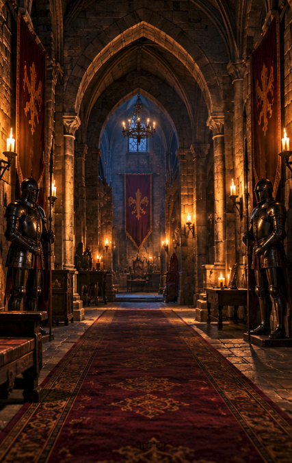
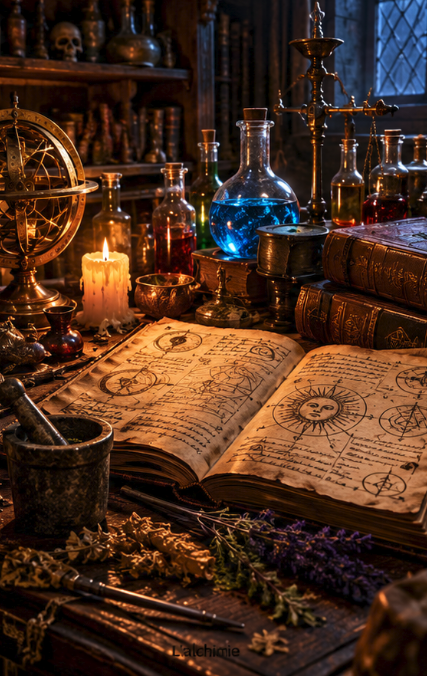
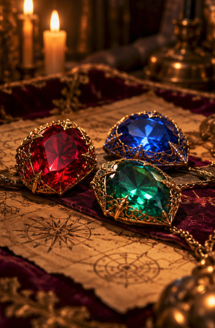
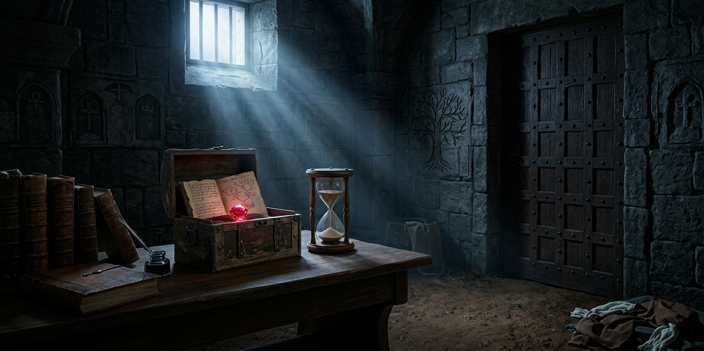
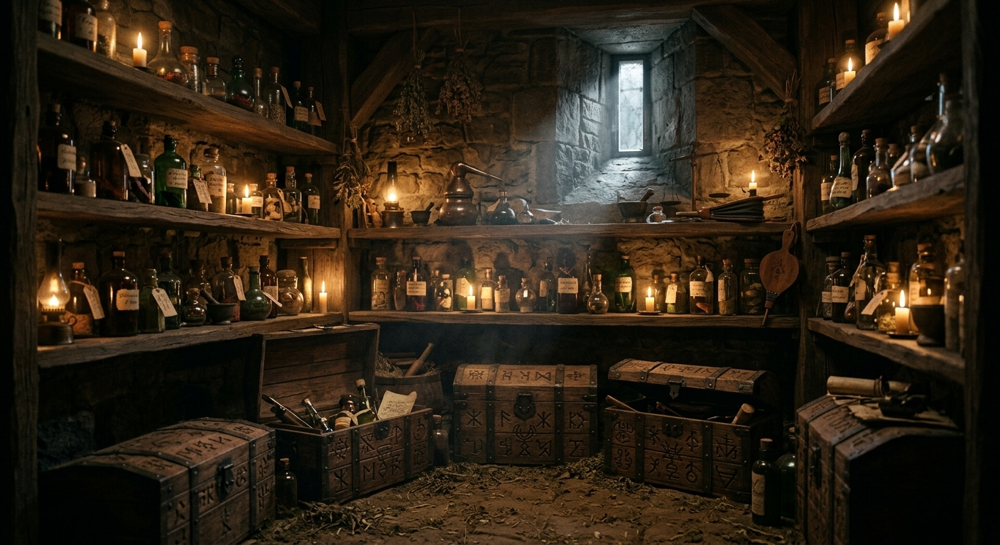
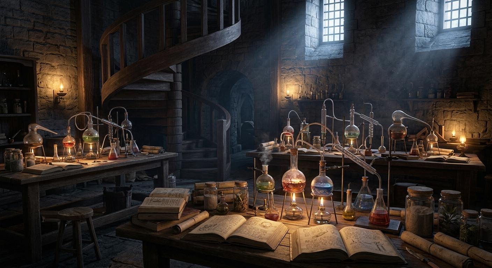

L'univers de l'alchimiste
Explorez un château rempli de mystères, découvrez les secrets de l'alchimie et retrouvez les trois joyaux de l'épée avant la fin du temps imparti.

Le château

L'alchimie

Les joyaux
Escape game médiéval
Explorez un château rempli de mystères, découvrez les secrets de l'alchimie et retrouvez les trois joyaux de l'épée avant la fin du temps imparti.

Le château

L'alchimie

Les joyaux
Après avoir touché une mystérieuse épée chez un antiquaire, vous vous retrouvez soudainement transportés dans un château médiéval abandonné. Autour de vous, une faible lumière éclaire la pièce. Vous ne savez ni où vous êtes, ni comment retourner à votre époque.
Une voix inconnue résonne alors dans le château et vous annonce que vous disposez de deux heures pour retrouver les trois joyaux de l'épée légendaire. Sur une table, un sablier commence à s'écouler, marquant le début de votre aventure.
Devant vous se trouve une porte verrouillée. Pour quitter cette première salle, vous devrez observer votre environnement, comprendre les indices laissés autour de vous et découvrir comment ouvrir la porte. Mais attention, le temps est déjà compté…

Après avoir réussi à ouvrir la première porte, vous poursuivez votre exploration et découvrez une ancienne réserve d'alchimie. La pièce est remplie d'étagères poussiéreuses, de fioles colorées, de coffres verrouillés et de vieux parchemins. Tout semble avoir été abandonné depuis plusieurs siècles.
En examinant les objets présents dans la salle, vous découvrez des indices laissés par l'ancien alchimiste du château. Certains symboles apparaissent sur plusieurs objets, tandis que des inscriptions mystérieuses semblent indiquer l'emplacement d'un joyau caché.
Pour avancer, vous devrez observer attentivement les éléments de la pièce, relier les différents indices et résoudre les énigmes qui protègent le joyau. Chaque découverte vous rapproche de l'épée légendaire, mais le temps continue de s'écouler. Parviendrez-vous à retrouver la pierre et à poursuivre votre aventure ?

Après avoir quitté la réserve, vous montez un long escalier sombre qui vous mène jusqu'à une nouvelle salle, l'ancien atelier de l'alchimiste. Dans cette pièce remplie de fioles, de livres et d'objets mystérieux, vous découvrez que le troisième joyau de l'épée est brisé. Une recette incomplète vous indique comment le reconstituer grâce à l'alchimie. À l'aide des indices et des objets récupérés dans les salles précédentes, vous devez trouver les bons ingrédients et respecter l'ordre indiqué par les symboles du carnet.
Réussirez-vous à reconstituer le dernier joyau et à découvrir le secret de l'alchimiste ?

Vous pénétrez dans la salle du trône et découvrez une structure en pierre possédant trois emplacements destinés aux joyaux. Vous devez y placer les trois pierres récupérées au cours de votre aventure. Un mécanisme magique s'active alors et révèle l'épée légendaire reconstituée. Vous vous retrouvez face au seigneur du château pour une confrontation décisive.
Après avoir vaincu le seigneur, vous découvrez enfin la vérité : la voix mystérieuse qui vous guidait depuis le début était celle de votre ancêtre. Il vous avait fait venir dans le passé pour accomplir sa vengeance. Le mystère est enfin résolu et vous pouvez espérer retrouver votre époque.

Durée : 2 heures
Nombre de joueurs : aventure solo
Tarif : 30 € par personne
Thème : Aventure médiévale, mystère et alchimie
Objectif : Retrouvez les trois joyaux de l'épée légendaire et découvrez les secrets du château avant la fin du temps imparti.